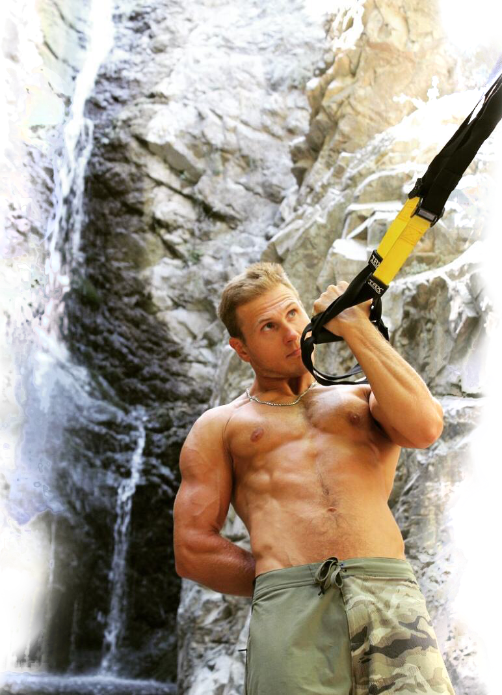
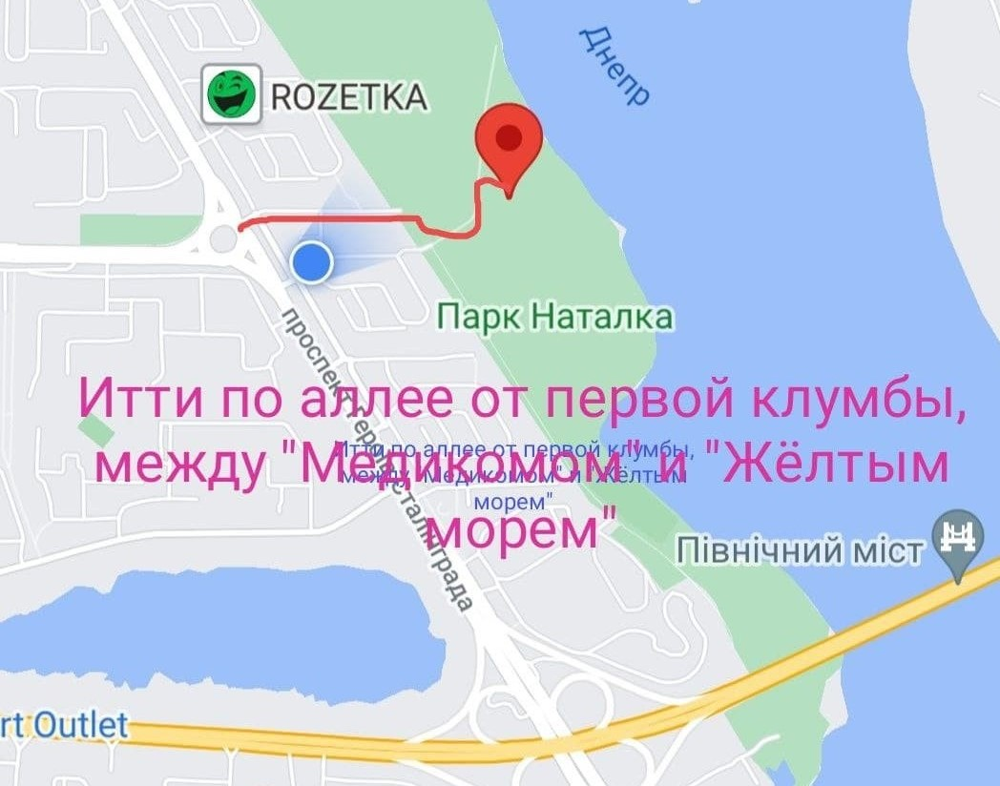

TRX групповые и персональные тренировки
Тренируйтесь эффективно на природе или дома с персональным тренером

Спорт - это необходимый в современном мире метод сохранения молодости!
Главное что дает спорт - это наше внутреннее самочувствие. Спортивный человек даже в возрасте
чувствует себя молодым и энергичным. Поэтому, в первую очередь я рекомендую Вам начать заниматься спортом если Вы чувствуете вялость и апатию!
Что дают тренировки? Зачем вообще тренироваться?
- Молодеет кожа
- Появится гибкость
- Уйдет лишний жир. Вы увидите в зеркале подтянутое, стройное, спортивное телосложение
- Укрепятся мышцы. Появится сила и подвижность
- Улучшается настроение. Появляется легкость и решительность
Вы заставляете свое тело работать на повышенных режимах. Тренируете сердце. Ускоряется кровообращение. Улучшается снабжение клеток
всех тканей питательными веществами - макро (БЖУ) и микроэлементами (витамины, минералы) и кислородом.
Улучшается удаление продуктов распада и углекислого газа. Эти процессы касаются всех органов, поэтому, в результате тренировок
улучшается общее состояние здоровья.
Я называю фитнес "гигиеной тела". В этом нет героизма, но Ваши результаты увидят все!
Тренер может прийти к Вам и провести полноценную тренировку у Вас дома или на улице
При этом, эффективность тренировки остается высокой благодаря персональному тренеру который контролирует прогресс, в любое удобное для Вас время!
Почему TRX?
- Отсутствие нагрузки на позвоночник и суставы, разгрузка позвоночника
- Работа с весом собственного тела
- Подходит для всех уровней тренеированности, мгновенная регулировка величины нагрузки
- Отсутствие зависимости от зала. Тренируйся где захочешь
- Подходит для реабилитации ОДА
- Полезно для развития подростков
- Быстрое сжигание калорий
Тренируясь с петлями TRX Вы поднимаете процент от веса собственного тела. Усилие, которое
приходится преодолевать всегда направлено вверх, навстречу гравитации, поэтому позвоночник и суставы разгружаются.
Такие нагрузки полезны всем людям. А так же хорошо подходят для разработки и укрепления суставов при реабилитации после травм, а так же полезны для подростков, поскольку укрепляют мышцы, развивают тело и не препятствуют росту.
Движения в TRX только базовые - многосуставные, энергоемкие, сопутствующие сжиганию большого количества калорий

О тренере:
Меня зовут Аркадий. Мой спортивный путь длится уже приблизительно 30 лет, из которых 10 я работаю тренером.
В подростковом возрасте я получил компрессионный перелом позвоночника.
Это событие положило начало пути реабилитации, в результате которого я восстановился, нашел профессию - тренер. И новое увлечение - силовой тренинг.
Если Вы хотите снизить лишний вес, откорректировать фигуру, провести общеукрепляющую тренировку или тренировку по реабилитации - такие цели вполне достижимы натренировках на улице или в домашних условиях.
Расположение и стоимость:
Стоимость персональной тренировки в парке "Наталка" 300грн/час/чел
Стоимость тренировки в мини группе, в парке "Наталка" 150грн/час/чел
Стоимость онлайн тренировки 400грн/час
Цена действует по Киеву, районы Оболонь, Минский
Групповые тренировки проводятся здесь:
Оболонь. Парк "Наталка". Итти по аллее в сторону Днепра от первой клумбы,
между рестораном "Желтые воды" и клиникой "Медиком", прямо, мимо детской площадки, в сторону фубольного поля.
